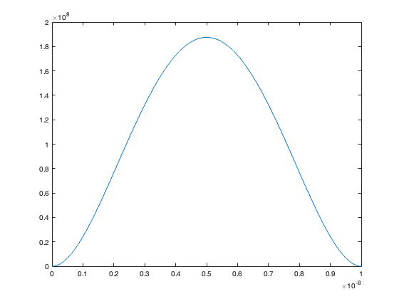
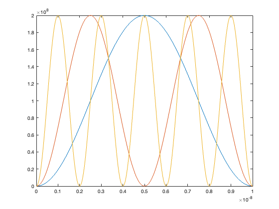
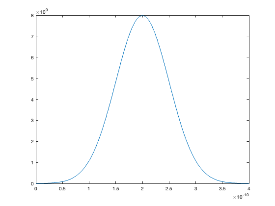

% Sidorian Pandovski % ECE 235 % % a) Normalize each wave function % % b) Calculate the expectation values of position and position squared, % and position uncertainty: <X>, <x^2>, and delX = sqrt(<x^2> - <x>^2) % % c) plot the probability density versus the positon. assume the particle % is an electron of mass m = 9.1 E-31 kg. for test wave functions 1 and 2 % assume L = 10 nm, for the third wave function, assume sigma = 1 angstrom, % xNaught = 2 angstrom, and kNaught = 2 E9 rads/m -> plot test functios 2 % for n = 1,2,5 % % d) -> Homework 5 % e) -> Homework 5 % % f) calculate the expectation values of momentum, momentum squared, and % the moment of uncertainty: <p>, <p^2>, and delp = sqrt(<p^2>-<p>^2) % % test wave functions: % 1) Psi(x,0) = Ax(x-L) where L is known. the particle is confined to the % region [0,L] -> therefore zero outside this region % % 2) Psi(x,0) = Asin(n*pi*x/L) where n is an arbitrary positive integer and % L is known. the particle is confined to the region [0,L] -> therefore % zero outside this region % % 3) Psi(x,0) = Aexp[(-(x-xNaught)^2)/sigma^2 + i*kNaught*x] the particle % can move in all 1D space % Defining variables: eMass = 9.1E-31; % kilograms L = 10E-9; % meters sigma = 1E-10; % meters x0 = 2E-10; % meters k0 = 2E9;% radians/meter n = [1 2 5]; x = linspace(0, L, 1000); x3 = linspace(x0-2*sigma, x0+2*sigma, 1000); % Normalization values: A1 = sqrt(30/L^5); A2 = sqrt(2 / L); A3 = (2 / (pi * sigma^2))^(1/4); % Given wavefunctions: Psi1 = A1 .* x .* (x-L); Psi2 = A2 .* sin(((pi.*n')/L).*x); Psi3 = A3 .* exp(((-(x3-x0).^2)/(sigma^2)) + (j * k0 .* x3)); figure; plot(x, abs(Psi1).^2); figure; plot(x, abs(Psi2).^2); figure; plot(x3, abs(Psi3).^2);


